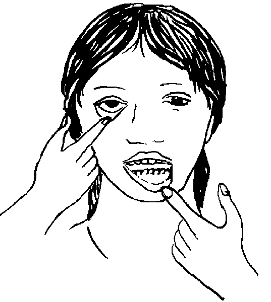

Pregnant women with anemia are more likely to bleed too much at birth, which can be deadly.
Signs of Anemia
If a woman has signs of anemia she should eat foods with a lot of iron. Or she can take 325 mg of iron tablets, 2 times a day, and 1 mg of folic acid once a day, until the baby is born. If she takes iron tablets with fruits like oranges, mangoes, or papayas her body will use the iron better.
{% endblock %} {% block footer %} {% endblock %}